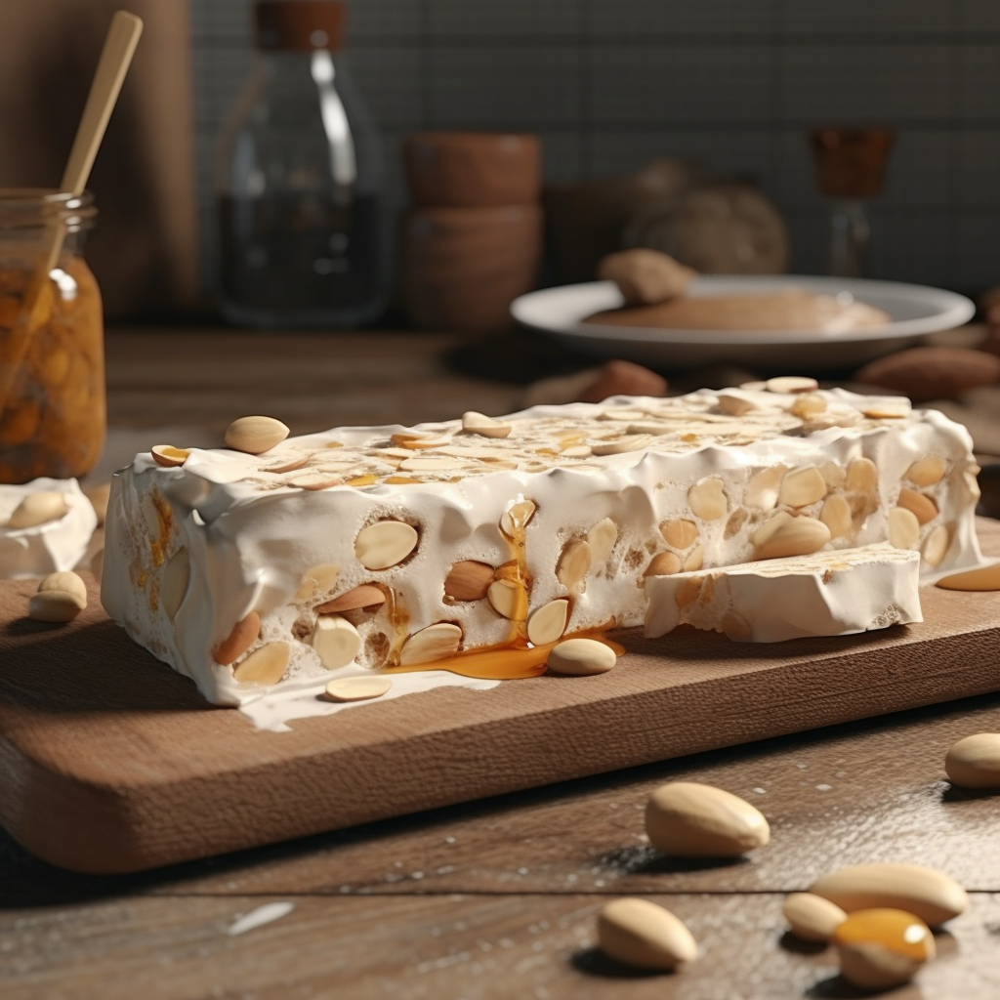

This is one of the oldest types of confections, and varieties can be found throughout Italy, Spain, France, the Balkans, and the Middle East. Although each region has its own distinctive type, most nougats are made of whipped egg white mixed with roasted chopped nuts such as almonds, pistachios, walnuts, and hazelnuts.
Meal prep time : 1 hour
Servings : 6